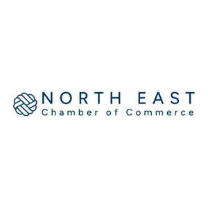

Trade Mark Journal No.2025/041 10 October 2025
UK00004238856 24 July 2025 (9,16,35,36,41,42,45)

- Class 9
- Electronic publications; Downloadable publications; Electronic publications, downloadable; Downloadable electronic publications; Publications in electronic format; Interactive electronic publications; Publications in electronic form; Publications in electronic format [downloadable].
- Class 16
- Printed publications; Advertising publications; Magazines; Printed booklets; Printed pamphlets; Printed brochures; Printed stationery; Printed flyers; Printed leaflets; Printed advertisements; Printed certificates; Printed informational flyers.
- Class 35
- Business consulting; Business consultancy; Business consulting for enterprises; Business planning and business continuity consulting; Business management; Business networking; Consultancy regarding business organisation and business economics; Business organisation; Commercial business management; Business management advice relating to manufacturing business; Business marketing services; Business planning; Business marketing consultancy; Business administration; Business acquisitions; Business expertise; Business information for enterprises; Business organization consulting; Business organization consultancy; Business research; Research (Business -); Consultancy (Professional business -); Professional business consultancy; Business consultancy (Professional -); Business inquiries; Inquiries (Business -); Business promotion; Business strategy services; Business planning services for enterprises; Business organisation consulting; Business research for new businesses; Business appraisal; Business appraisals; Appraisals (Business -); Business Enquiries; Professional business consulting; Business organization and operation consultancy; Business brokerage services; Business consultancy to firms; Business consultancy to individuals; Business consulting services; Business management and enterprise organization consultancy; Business management and consulting; Business management consulting; Business marketing consulting services; Business management of entertainers; Advisory services relating to business management and business operations; Business management services; Business advice; Business networking services; Business assistance relating to business image; Business organization advice; Business management and consultancy; Business management consultancy; Business management for a trade company and for a service company; Business invoicing services; Business consultation; Strategic business consultancy; Business management organisation; Business investigations; Investigations (Business -); Business information; Business planning services; Business appraisals and evaluations in business matters; Business administration services; Business consultancy services; Business planning consultancy; Business management of theaters; Business analysis; Business management of airports; Business merger services; Business surveys; Surveys (Business -); Business assistance; Business investigation; Assistance to commercial enterprises in the management of their business; Business organization and management consulting; Business and market research; Business management and organization consultancy; Business organisation consultancy; Professional business consultation relating to the operation of businesses; Business research services; Business project management; Business intelligence services; Administration of the business affairs of franchises; Business appraisal services; Professional business consultancy services; Business organisation and management consulting; Business promotion services; Business expertise services; Business appraisal consultancy; Organisation of exhibitions for business or commerce; Management of business [for others]; Commercial assistance in business management; Business organizational consultation; Business organisation advice; Business process management; Business partnership search; Business representative services; Business management and consulting services; Business management consulting services; Business research consulting; Operational business assistance to enterprises; Business marketing consultation services; Business management planning; Business advisory services; Assistance and advice regarding business organization; Providing assistance in the field of business promotion; Providing assistance in the field of business organisation; Assistance and advice regarding business organisation and management; Assistance and advice regarding business organization and management; Management assistance services; Management assistance; Providing assistance in the management of business activities; Assistance, advisory services and consultancy with regard to business organization; Provision of business assistance; Providing advice relating to the organisation and management of businesses; Assistance and advice regarding business management; Providing assistance in the field of business management; Management assistance for promoting business.
- Class 36
- Financial advisory services; Advice regarding lending services; Provision of financial advice.
- Class 41
- Online publications, namely blogs; Publication of leaflets; Publication of educational texts; Publishing of newsletters; Magazine publishing; Publication of printed directories; Publishing of printed matter; Publication of printed matter in electronic form; Publication of educational printed matter; Business training; Business mentoring services; Business educational services.
- Class 42
- Design of printed material; Design of printed matter; Information technology support services; Provision of technical support in the supervision of computing networks; Provision of technical support in the operation of computing networks; Providing on-line support services for computer program users; Computer software technical support services; Support and maintenance services for computer software; Providing scientific information, advice and consultancy relating to carbon offsetting.
- Class 45
- Legal services relating to business; Legal support services.
North East Chamber of Commerce